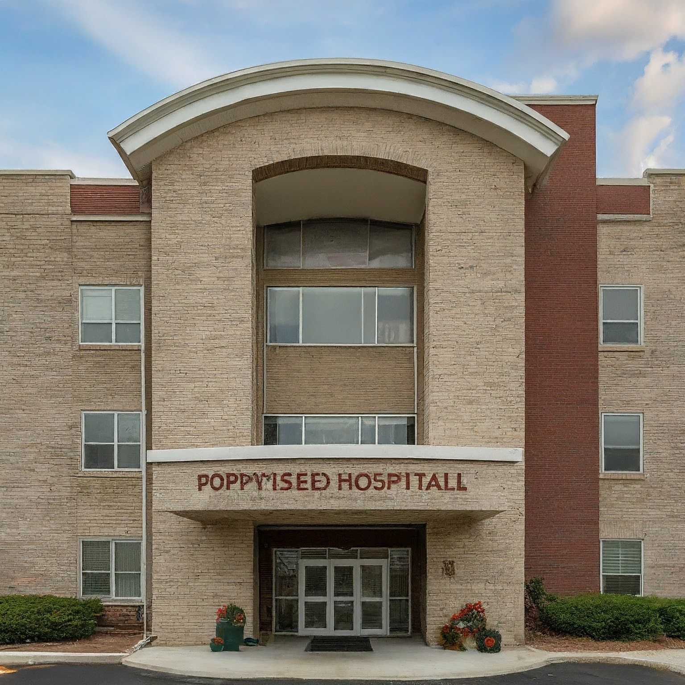

Branch 1 - Union Place
The main branch of PoppySeed Hospitals is located in the heart of City A. This large, modern facility offers a comprehensive range of services, including emergency care, surgery, intensive care, and specialized treatments. It also serves as the central hub for our medical school and research center, fostering innovation and education in the medical field.